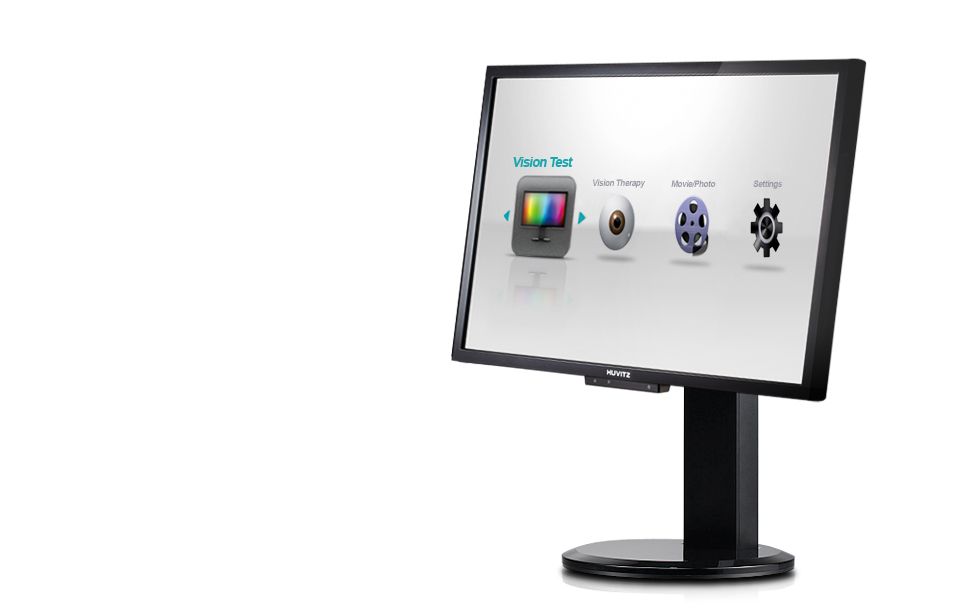

HDC-9000N/PF
(시력표)
다양함을 더 할수록, 기술을 더 할수록 검안은 정확해집니다.
다양한 시표는 물론 Vision Test, Vision Therapy로 검안이
한단계 Upgrade 됩니다.
이 제품은 의료기기이며, 사용상의 주의사항과 사용방법을 잘 읽고 사용하십시오.
(심의번호: 2013-I10-04-1442)
- 
제품소개
- 고화질 24인치 LCD 차트
- 24인치 칼라 TFT-LCD 편광패널을 채용하고 1,920x1,080 픽셀의 고해상도 차트를 제공함으로써 더 정확한 검안을 할 수 있습니다.
- 다양한 종류의 기본 검안차트 제공
- 다양한 차트는 정확한 시력 및 시 기능 측정을 위한 모든 종류의 검사법을 지원합니다.
영문, 숫자, 란돌트링, 스넬렌 시표 및 유아용 그림시표까지 다양한 시표를 제공합니다.
- 컬러비전 테스트
- 색각이상판정을 위한 12가지 시표 및 색각이상을 분류하고 정도를 구분하기 위한 9가지 시표를 제공하며,
색각이상으로 판정된 경우 제1(적색약) 및 제 2색각 이상(녹색약)으로 분류하고 그 정도를 알려줍니다.
- 대조대비 테스트
-
문자시표를 사용하여 식별 가능한 Contrast의 단계를 검사하는 대비테스트와 눈의 해상력을 고려하여
방향성 있는 바 형태의 시표를 사용한 대비감도 테스트를 제공합니다.
- 색상 검사(Hue Test)
-
파장에 따라 세밀하게 단계별로 구분된 색상을 식별하는 능력을 검사합니다.
85개의 색상시표로 구성된 전문검사 및 15개의 색상시표로 구성된 간략검사를 제공합니다.
제품사양
| LCD Type | 24inch Color TFT-LCD (Only HDC-9000PF 편광 패널) |
|---|---|
| Resolution | 1920 x 1080 pixels |
| White Luminance | 300 cd/㎡ |
| Chart Window Size | 531.4mm(H) x 298.9mm(V) |
| Power | Input: AC100-240V, 50/60Hz Output: DC+12V, 7.08A |
| Data Transmission | Connected to PC[USB], Connected to HDR/CDR[CAN] |
| 소비전력 | 80VA |
| 본체 크기 | 568mm(W) x 346mm(H) x 80mm(D) / 6.1kg |
| 리모컨 크기 | 64mm(W) x 195mm(H) x 21mm(D) / 160g |
| 검사거리 | 1.5m~6m (0.1m Step) |
| 외부 연결단자 | Audio, USB, HDMI, CAN, RGB |
| 통신 |
|
| 본체 고정 방식 | Wall Mount 방식 |
| 선택사항 | 데스크 스탠드, 이동형 스탠드, 적녹안경, 편광안경 |
| 시표 | 란돌트 링, 알파벳, 숫자, 스넬렌 E, 어린이용, 러시아, 히라가나 기능 시표(적/녹, 크로스 실린더, 양안균형, 융합억제, 사위, 부등상시, 입체시 등) |
| 마스크, 필터 | 글자, 행, 열, 적/녹 필터 |
| 사용자 설정 |
|
| 검사 |
|
| 기타 | Vergence, Saccadic 운동, HRK-8000A와 HDMI로 연결 |
| 상기 제품의 디자인과 세부 사항은 기능 향상을 위해 사전 예고없이 변경될 수 있습니다. | |